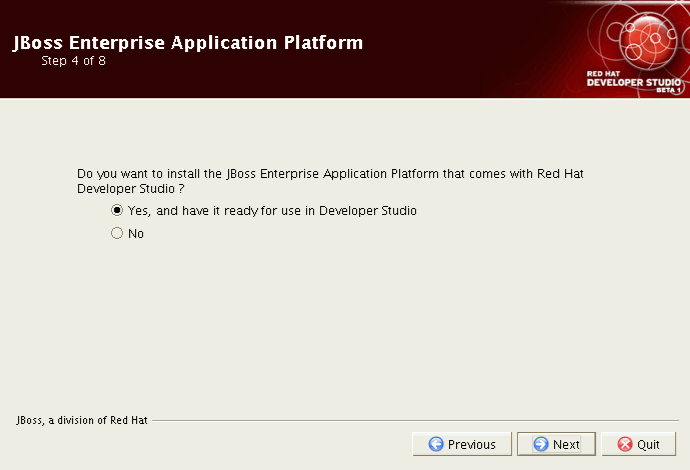
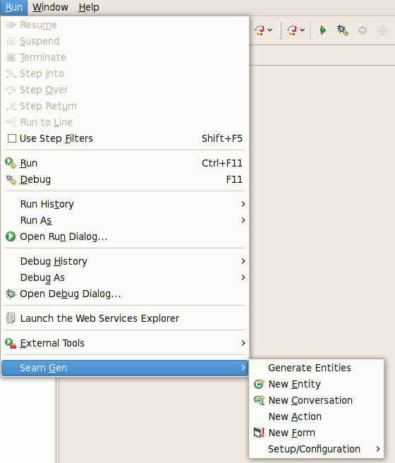

Eclipse |
|
|
Eclipse 3.3 (Europa) |
Red Hat Developer Studio includes Eclipse 3.3 |
|
WTP 2.0 |
Red Hat Developer Studio includes the Web Tools Platform 2.0 that is part of the Eclipse Europa release. |
JBoss Enterprise Application Platform |
|
|
JBoss Enterprise Application Platform 4.2 |
Red Hat Developer Studio includes and integrates the JBoss Enterprise Application Platform 4.2. During the install process, Red Hat Developer Studio can install the JBoss Enterprise Application Platform right into your development environment.  |
|
|
|
|
Seam-Gen |
Red Hat Developer Studio includes a matching Seam-Gen for the JBoss Enterprise Application Platform and exposes Seam-Gen functionality with visual tools.  |